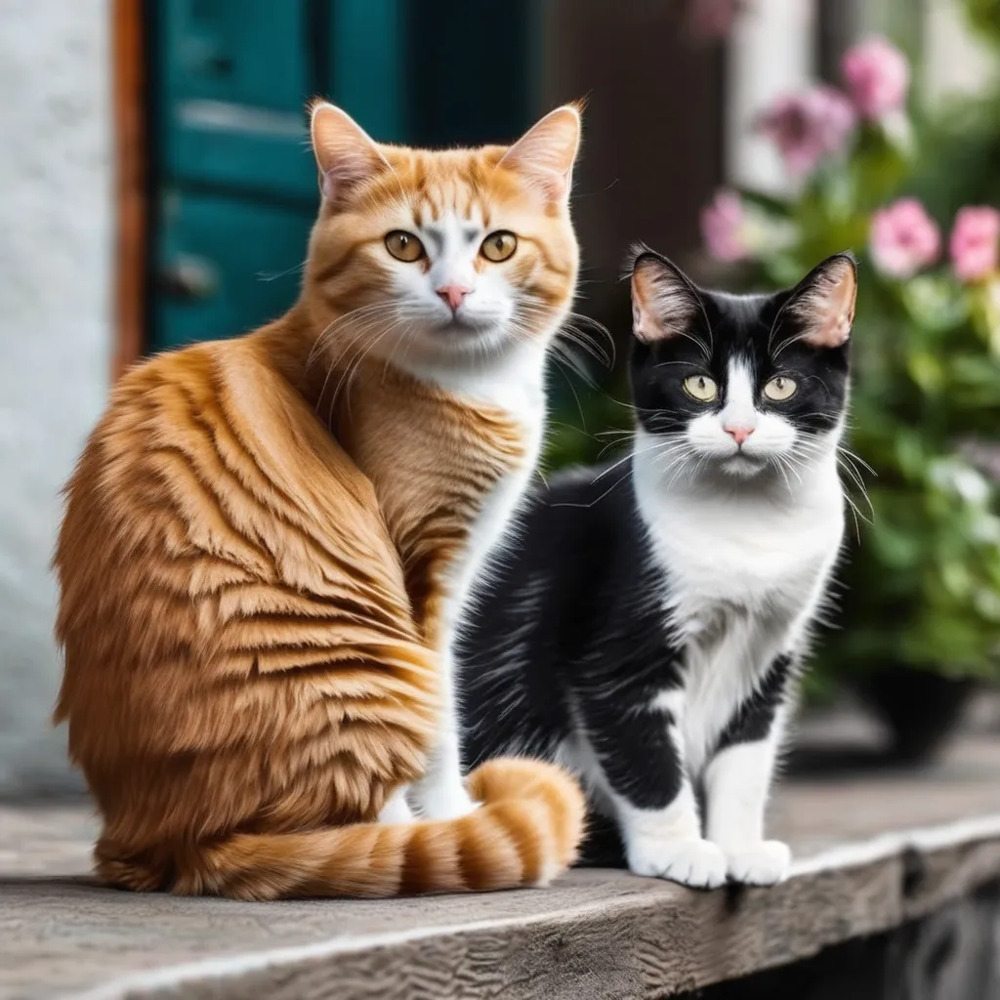
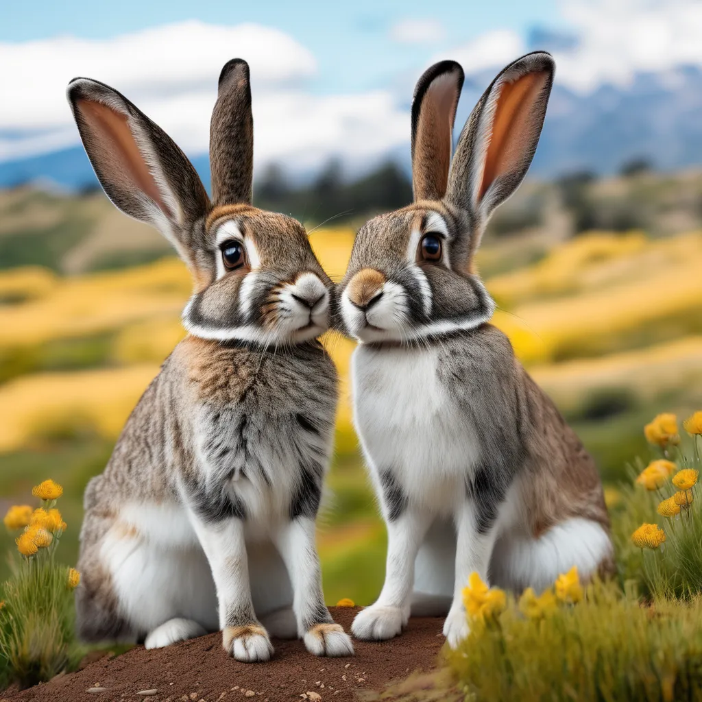
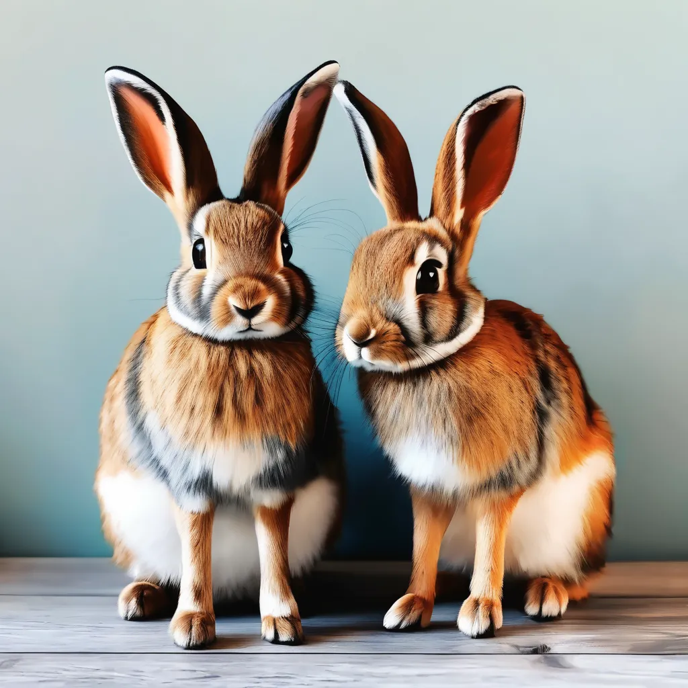
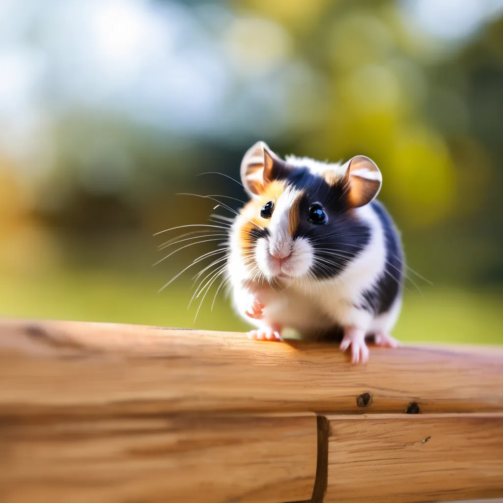
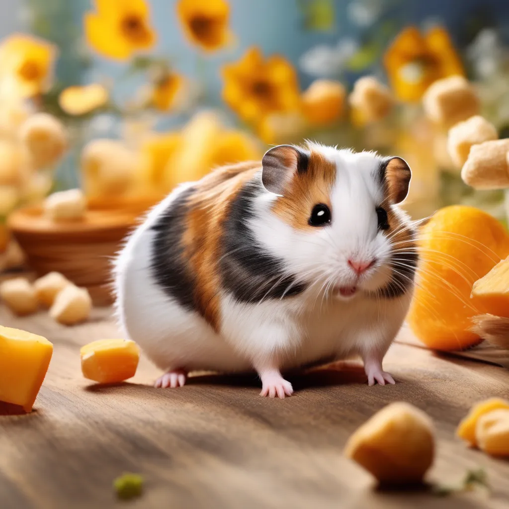

Listas desordenadas
Perros
-
Los perros son conocidos como los mejores amigos del hombre, son leales y siempre están listos para jugar.
-
Los perros tienen una gran variedad de razas, cada una con su propia personalidad.
-
Los perros requieren ejercicio diario y son excelentes compañeros para paseos al aire libre.
Listas Ordenadas
Gatos
-
Los gatos son animales independientes y suelen disfrutar de su tiempo a solas.
-
Los gatos son cazadores natos y les encanta jugar con juguetes que simulan presas.
-

Los gatos son conocidos por sus suaves ronroneos que pueden ser muy reconfortantes.
Lista en orden y desorden
Otros Animales
-

Los conejos son adorables y requieren mucho cuidado y atención.
-

Los conejos son herbívoros y necesitan una dieta rica en heno y verduras frescas.
-

Los hámsters son pequeñas y adorables mascotas que son muy fáciles de cuidar.
-

Los hámsters son activos y necesitan una jaula espaciosa para explorar.